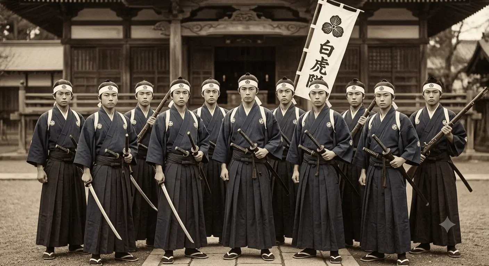
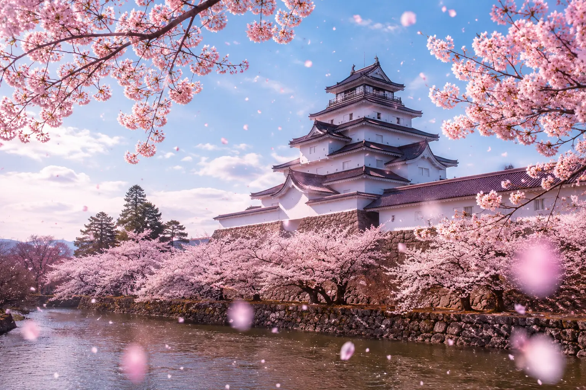
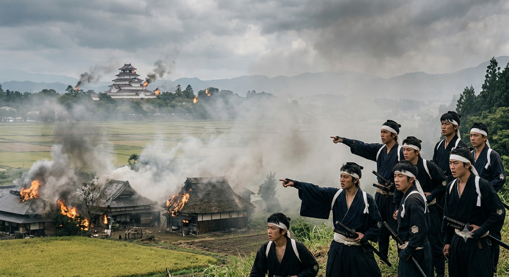
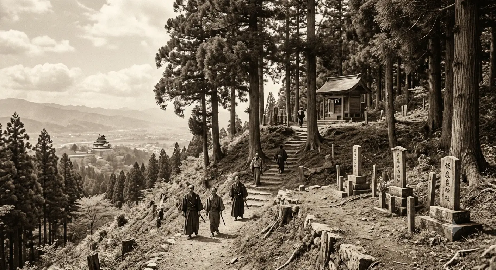
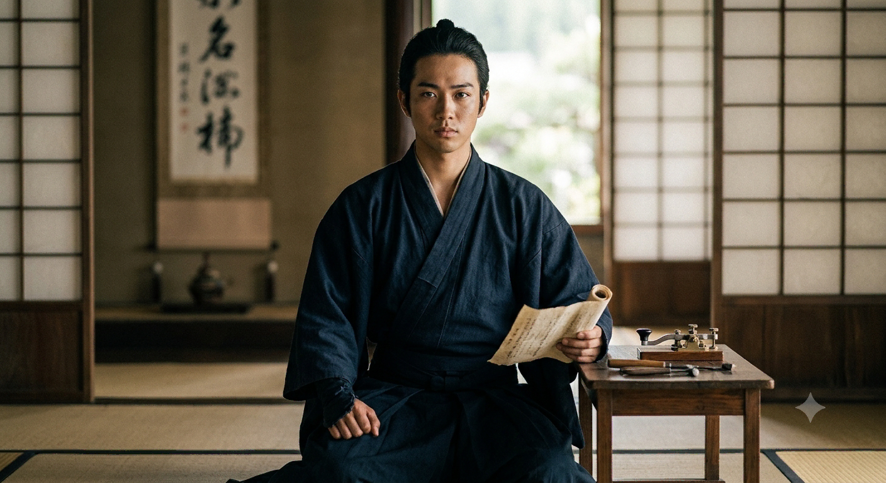
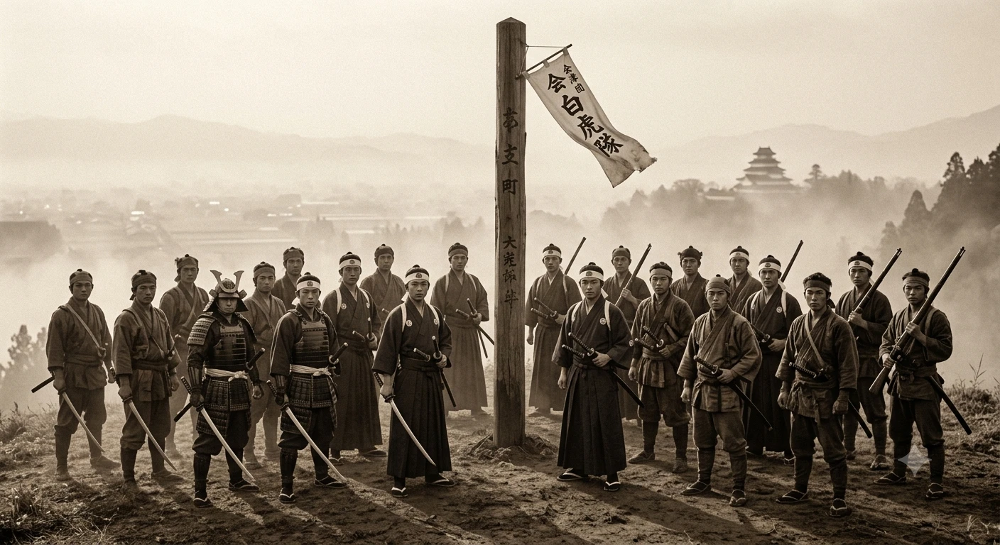
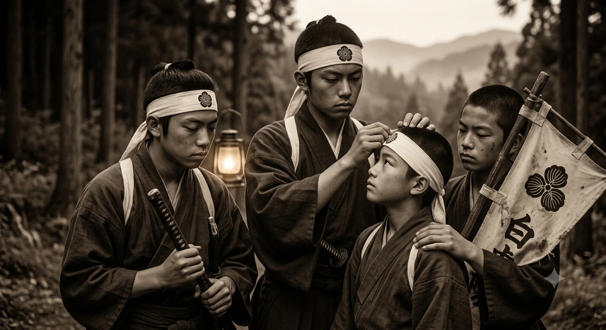
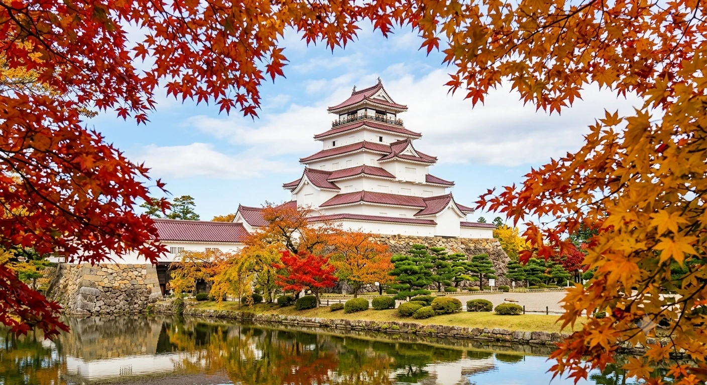
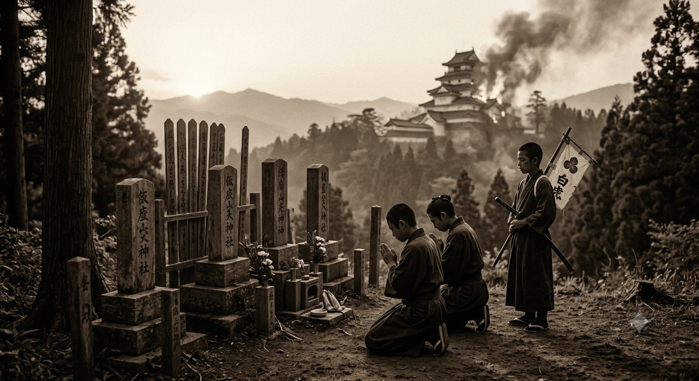
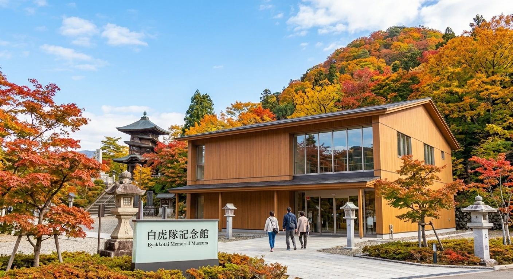

白虎隊の結成
年齢別に編成された四隊のうち16〜17歳で構成された少年隊です。
白虎隊の若者たちは藩校・日新館での厳しい教育を通して、「武士道」や藩主への強い忠誠心を身につけていました。この価値観が、後に飯盛山での悲劇的な自刃へとつながったとされています。

白虎隊（びゃっこたい）は、幕末の戊辰戦争（1868年）の際、会津藩が組織した16歳から17歳の少年たちによる部隊です。
劣勢な新政府軍から会津の町（鶴ヶ城）を守るために出陣しましたが、城が陥落したと誤認し、飯盛山（いいもりやま）で悲痛な集団自刃を遂げたことで歴史に名を残しました。

年齢別に編成された四隊のうち16〜17歳で構成された少年隊です。
白虎隊の若者たちは藩校・日新館での厳しい教育を通して、「武士道」や藩主への強い忠誠心を身につけていました。この価値観が、後に飯盛山での悲劇的な自刃へとつながったとされています。

戊辰戦争において最大の激戦地となった会津（現在の福島県）は、1868年の会津戦争で新政府軍と旧幕府軍が激突した舞台です。城下町を巻き込んだ凄惨な戦いが行われ、若松城（鶴ヶ城）は1ヶ月におよぶ籠城戦に耐え抜きました。

鶴ヶ城が落城したと思い、自刃した場所として現在も多くの人が訪れます。幕末の戊辰戦争において、会津藩の少年たちで結成された「白虎隊」。彼らが城下の惨状を目の当たりにし、悲劇的な最期を迎えた地が福島県会津若松市の飯盛山です
戊辰戦争は、江戸幕府を終わらせて天皇中心の新しい国家（明治新政府）を作ろうとする薩摩藩・長州藩など（新政府軍）と、権力や領地を奪われることに反発した旧幕府勢力との間で起きた政権争いです。主な原因と対立の背景大政奉還のズレ：1867年、江戸幕府第15代将軍・徳川慶喜が政権を朝廷に返上しました。しかし幕府廃止後も徳川家は依然として強大な権力と広大な領地を持ち続けていました。新政府による圧力：薩摩・長州を中心とする新政府は、徳川家の権力を完全に奪うため、慶喜に官職の辞職と領地の返上を要求しました。旧幕府側の反発：この要求に不満を抱いた旧幕府軍が、京都へ向けて進軍したことで武力衝突（鳥羽・伏見の戦い）が勃発しました。
慶応4年（1868年）8月、戊辰戦争の最中に会津藩主・松平容保の命により、16歳から17歳の少年たちで構成された予備部隊「白虎隊」が実戦に出陣しました。圧倒的な戦力差と過酷な状況の中、彼らは最前線へと向かうことになります。白虎隊の出陣と戸ノ口原の戦い白虎隊は主に年齢によって隊が分かれていましたが、出陣したのは主に「士中二番隊」などの少年たちでした。
出陣の命令: 1868年（慶応4年）8月22日、母成峠の戦いなどで新政府軍が会津へ進軍する中、白虎隊に出陣命令が出されました。少年たちは意気揚々と鶴ヶ城（若松城）へ登城し、藩主・松平容保に謁見したのち、大本営が置かれていた旧滝沢本陣へと向かいました。。
白虎隊（士中二番隊）が最前線の戸ノ口原から退却したのは、新政府軍の圧倒的な兵力と近代兵器の前に劣勢となり、部隊の壊滅を防ぐためでした。猪苗代方面での敗戦を受け、鶴ヶ城（若松城）へ戻って再起を図るための苦渋の決断でした。退却の詳細な理由は以下の通りです。戦局の悪化： 新政府軍の強力な火砲（アームストロング砲など）の猛攻を受け、旧式銃主体の会津藩部隊は防戦一方となりました。部隊の分断： 激しい戦闘の中で隊長ら上官と逸れてしまい、現場の判断で一旦後退せざるを得なくなりました。鶴ヶ城への合流： 最前線でのこれ以上の戦闘は全滅を意味するため、猪苗代湖畔から戸ノ口原を経て、戸ノ口堰の洞門（水路のトンネル）をくぐり飯盛山へ逃れました。
飯盛山での誤認：戸ノ口原から退いた隊士20名（士中二番隊）は、飯盛山にたどり着きました。そこから見下ろす会津若松の城下町は煙と炎に包まれており、彼らは鶴ヶ城が陥落したと誤認しました。決死の自刃：主君に忠誠を誓う武士として「生きて虜囚の辱めを受けず」という教えに従い、捕らわれる前にと、互いに刺し違えたり自刃したりして17名が命を落としました。奇跡の生存者と後世への伝承この集団自刃において、飯沼貞吉（のちに貞雄と改名）という1名の隊士だけが奇跡的に息を吹き返し、救助されました。彼によって飯盛山での悲劇の真相が後世に伝えられることとなりました。

飯沼貞吉（いいぬま さだきち）は、幕末の戊辰戦争における会津藩「白虎隊」で、唯一生き残った隊士です。自刃に失敗して蘇生した後、長州藩士の支援を受けて明治時代を生き抜き、唯一生還し、白虎隊の真実を後世へ伝え逓信省の技師として日本の電信・電話網の近代化に大きく貢献しました

会津藩の未来を背負い戦った若者たち。悲劇として知られるのは二番隊の事。彼らは戦場の混乱の中指揮をしていた隊長とはぐれ、飯盛山に辿り着く、そこで燃える城下町を見て「この戦争は負け」と判断「生き恥は晒さぬ」と自刃した。この時の行動の根底には彼らが育った「教育５訓」の中に「ならぬものはならぬことです」という教育があったからとされています。価値観として命より武士の生き方が優先されたわけです。

白虎隊士の思いとは、「愛する会津の地と藩主のために命を捧げる」という純粋で悲壮な忠義です。慶応4年（1868年）の戊辰戦争で、16〜17歳の少年たちは祖国を守る覚悟で戦場へ赴きました。



白虎隊（びゃっこたい）は、幕末の戊辰戦争の際、福島県の会津藩が組織した、数え16・17歳の少年たちによる部隊です。朱雀隊・青龍隊・玄武隊とならぶ年齢別部隊の一つで、総勢300人余りで構成されていました。
白虎隊（びゃっこたい）は、幕末の戊辰戦争（1868年）の際、会津藩が組織した16歳から17歳の少年たちによる部隊です。劣勢な新政府軍から会津の町（鶴ヶ城）を守るために出陣しましたが、城が陥落したと誤認し、飯盛山（いいもりやま）で悲痛な集団自刃を遂げたことで歴史に名を残しました
現在は会津若松市の代表的な観光名所となっています。鶴ヶ城内は天守と麟閣を除けば、どこでも無料で入ることができます。 市民公園にもなっている鶴ヶ城ですから、早朝からジョギングやウォーキング、散歩を楽しむ市民がやってきます。 場内の見どころは本丸の東南にある「荒城の月」碑やすぐ上の月見櫓から朱色が鮮やかな廊下橋を見下ろす景色です。